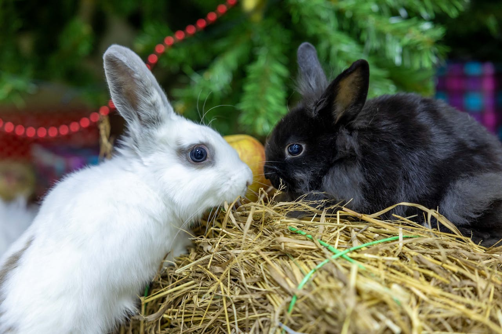

About Us
Tiny Hops is your one-stop destination for top-quality supplies designed to keep your rabbits happy, healthy, and thriving. We understand the unique needs of rabbits, which is why we carefully curate a selection of products tailored for their well-being. From nutritious, high-quality food that promotes optimal health to cozy habitats that provide comfort and security, we ensure your bunny feels loved and cared for. Our offerings also include engaging toys to keep them active and entertained, as well as grooming essentials to maintain their hygiene. At Tiny Hops, your rabbit's happiness is our top priority, because we believe every bunny deserves the best!
